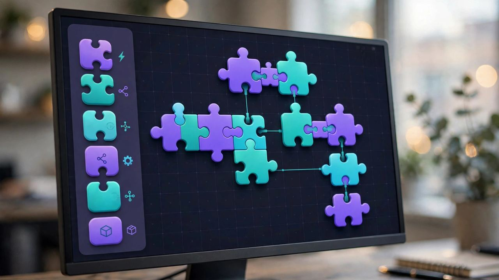

What Studio actually is
Forget the marketing. Odoo Studio is a visual builder that sits on top of Odoo. You click to add fields to a form. You drag to rearrange a view. You point at an existing model, like sales orders or contacts, and extend it without writing Python. You can build simple automations: when this happens, do that.
It is not a separate product. It is Odoo with the hood open and the tools laid out where a non-developer can reach them.
And for a specific class of problem, it is genuinely great.
Where clicking wins
The sweet spot is simple and well-defined. A custom tracker for samples going out to customers. Three new fields on the purchase order that purchasing has been begging for. A basic approval step before a quote goes out. A kanban view of a process your team currently runs on sticky notes.
These are real business needs. Before Studio, each one meant a developer, a quote, a wait, and a bill. Now the operations manager builds it on a Tuesday afternoon. The build that took three weeks of back-and-forth takes three hours of clicking.
The math is not close. When the problem is simple, code is overhead. Every line of custom code is a line you maintain, upgrade, and debug forever. The app you clicked together has no technical debt because there is no code. That is not a small thing. That is the whole game.
Where clicking breaks
Here is the part the demos skip. Studio is a builder, not a programming language. The moment your logic gets conditional and layered, the clicks stop being enough.
Real examples of the wall. Pricing rules with exceptions on exceptions. Multi-step approvals that branch based on amounts, regions, and product lines. Anything that has to talk to an outside system in real time. Performance at scale: the tracker that was fine for 200 records gets painful at 20,000. 
When you hit that wall, you have two choices. Bring in a developer to build a proper custom module, or keep clicking and build something fragile that everyone is afraid to touch. The second option is how you end up with a worse mess than the spreadsheet you replaced.
This is the honest rule I give every client. If you can describe the whole thing in one sentence, click it. If you need a paragraph and a whiteboard, code it.
The governance trap nobody warns you about
There is a subtler danger, and it has nothing to do with technology. When anyone can build apps, anyone does. Six months later you have eleven Studio apps, and the person who built seven of them left in March. Nobody knows what the automations do. Everybody is afraid to turn them off.
IT departments learned this lesson with spreadsheets twenty years ago. The tool changed. The lesson did not.
So if you turn on Studio, set ground rules on day one. Every app gets an owner, and the owner is a name, not a department. Every automation gets a one-line description of what it does and why. And somebody reviews the app list quarterly and deletes what nobody uses. This takes an hour. Skip it and you will spend weeks untangling it later.
How to start without regret
Pick one real pain, not the biggest one. The biggest one is where the complexity lives. Pick the annoying one everyone complains about at lunch. Build it in Studio. Time yourself. If it takes an afternoon and works, you just proved the concept.
Then stop and ask the hard question before you build the second one. Is this still a simple problem, or am I now building a system out of clicks because I am avoiding a conversation with a developer? Honesty here saves real money.
Studio is at its best as a prototyping tool, too. Click the workflow together, put it in front of the team, let them break it for a week. Now when you do hire a developer, you hand them a working model instead of a requirements document. That conversation goes twice as fast.
The bottom line
The best code is the code you never had to write. Odoo Studio deletes a whole category of small development work, and that is a genuine win for small and mid-size businesses that do not have developers on staff.
But the second-best skill is knowing when the clicks stop being enough. Simple problems get clicks. Complex problems get code. And the expensive mistakes all come from confusing the two.
Start with the drawer of small problems. Click those into existence. Save the developers for the problems that deserve them.
Frequently asked questions
Do I need to be technical to use Odoo Studio?
No. If you can use Odoo itself, you can use Studio. The interface is drag and drop. That said, the less technical you are, the more important the governance rules become, because you will not recognize when you have built something fragile.
Can Studio apps survive Odoo upgrades?
Generally yes, and this is one of its real advantages over custom code. Because Studio apps are built from standard components, they tend to carry forward cleanly. Custom Python modules are the things that break on upgrade. Still, test everything after an upgrade. Trust, then verify.
When should I hire a developer instead of using Studio?
When the logic needs branching conditions, when it integrates with outside systems in real time, when performance matters at volume, or when you find yourself building workarounds for the workarounds. That last one is the tell. If the clicks are getting clever, stop clicking.
Is Odoo Studio included with Odoo?
Studio is available with Odoo Enterprise. If you are on the Community edition, it is not there, and that is one of the practical differences worth pricing out when you choose your edition.